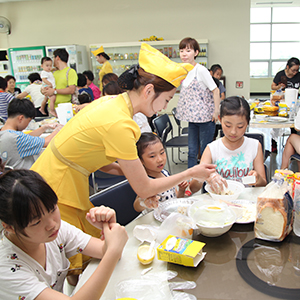

(주) 오뚜기
- 오뚜기 소개
- (주)오뚜기 임직원은 식품을 통해 인류의 건강과 행복을 추구하고 있습니다.
최고의 맛을 향한 열정
오뚜기 전 임직원들은 '보다 좋은 품질, 보다 높은 영양, 보다 앞선 식품'으로 인류 식생활 향상에 이바지하기 위해 맡은 바 업무에 최선을 다하고 있습니다.
영업, 생산, 연구, 관리 등 모든 부서에서 스스로에게 주어진 업무를 빈틈없이 처리하고 있는 것은 물론 밝고 명랑한 직장 분위기를 만들기 위해 노력하고 있습니다.
이러한 오뚜기의 노력들이 바로 최고 품질, 최고의 맛으로 승화되는 것입니다.

- 오뚜기는
- 보다 좋은 품질
보다 높은 영양
보다 앞선 식품을 위해
최선을 다하고 있습니다

- 최고의 맛을 향한 열정
- 모든 부서에서 최고 품질,최고 맛을
승화시키기 위해
보다 앞선 식품을 위해
최선을 다하고 있습니다
맛있는 식품은 신선한 원료에서
신선한 육류와 야채를 사용한 '오뚜기 3분 요리'는 바쁜 현대인들에게 충분한 영양을 공급합니다.
정선된 원료로 만든 '오뚜기 마요네스'와 '드레싱'은 신선한 야채를 다양하게 즐길 수 있도록 해줍니다.
갖가지 향신료로 만든 '오뚜기 카레'는 더욱 부드럽고 향긋한 카레 특유의 풍미를 느낄 수 있습니다.
과육의 원형이 살아있는 '오뚜기 프리저브형 쨈'은 딸기, 포도, 블루베리 등의 신선한 과실로 만듭니다.
엄선된 쌀을 깨끗하게 씻어 포장한 '씻어나온 맛있는 오뚜기쌀'은 더 씻을 필요 없이 물만 부어 한번에 밥을 지을 수 있기 때문에 매우 간편합니다.
'맛있는 오뚜기밥'은 갓 지은 맛있는 밥을 무균 포장한 제품으로 간편한 식생활을 추구하는 현대인들에게 필수적인 제품입니다.
우수한 품질은 좋은 시설에서
우리 회사는 카레, 스프, 케챂, 마요네스 등 1등 제품이 많습니다.
이처럼 많은 제품들이 오랫동안 정상을 지켜온 비결은 고객들의 욕구를 충실히 반영한 좋은 품질의 제품을 공급해왔기 때문입니다.
우리 회사의 모든 생산라인은 자동화된 첨단설비, 위생적인 환경을 구축하고 있습니다.
이것이 바로 오뚜기의 저력이고 1등 제품의 힘입니다. 그리고 발전하는 21세기 오뚜기의 비전입니다.
이런 오뚜기의 노력이 최고 품질, 최고의 맛으로 승화되는 것입니다.

- 신선한 원료
- 신선한 육류와 야채를 사용한
'오뚜기 3분 요리'
바쁜 현대인들에게
충분한 영양을 공급합니다.

- 우수한 시설
- 생산라인은 자동화된 첨단설비,
위생적인 환경을
구축하고 있습니다.